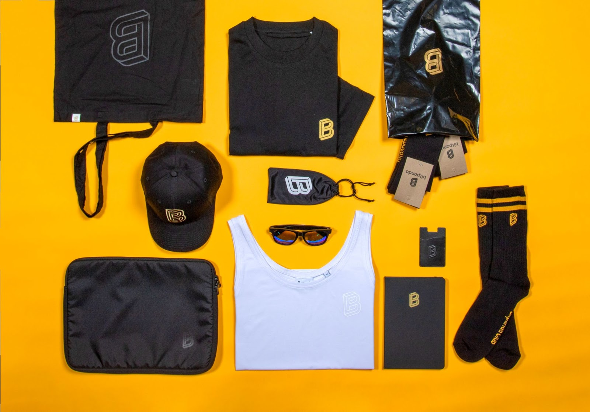
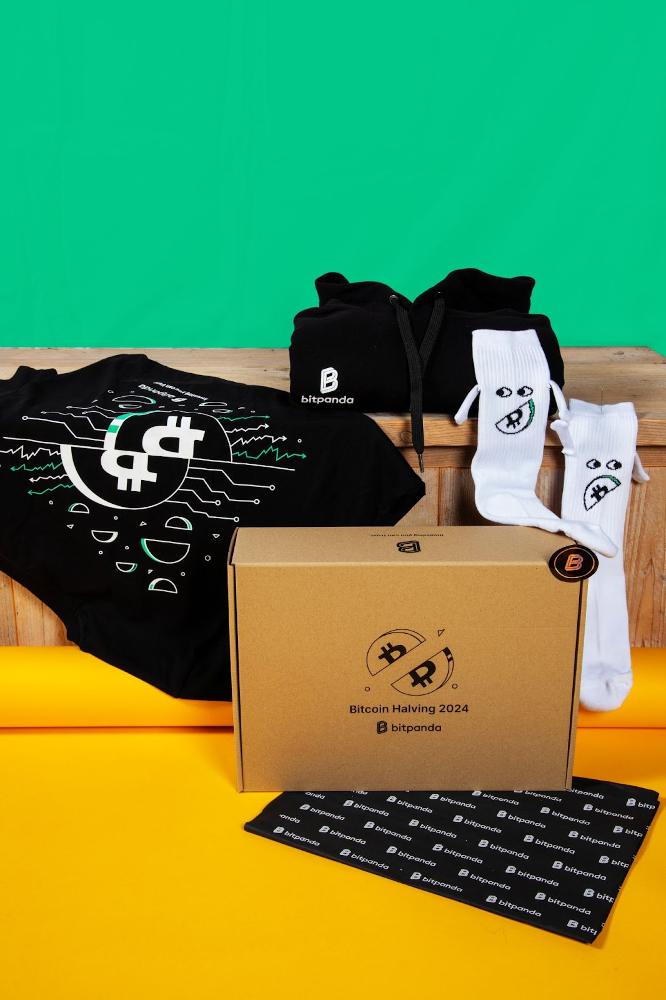
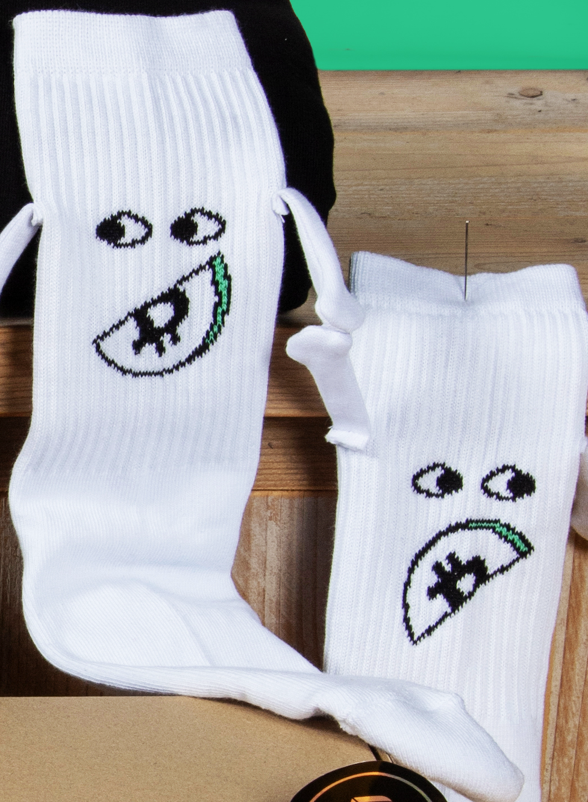
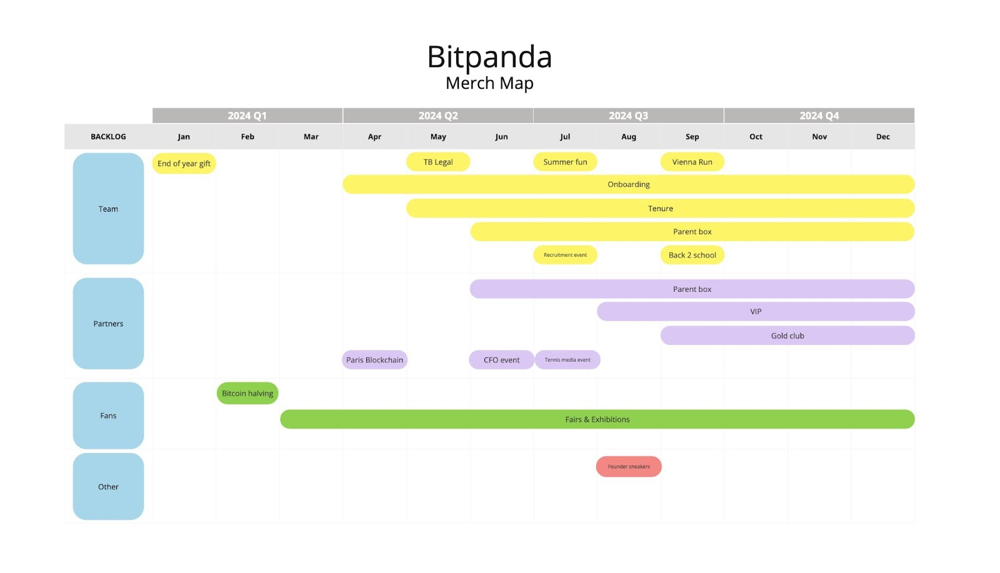
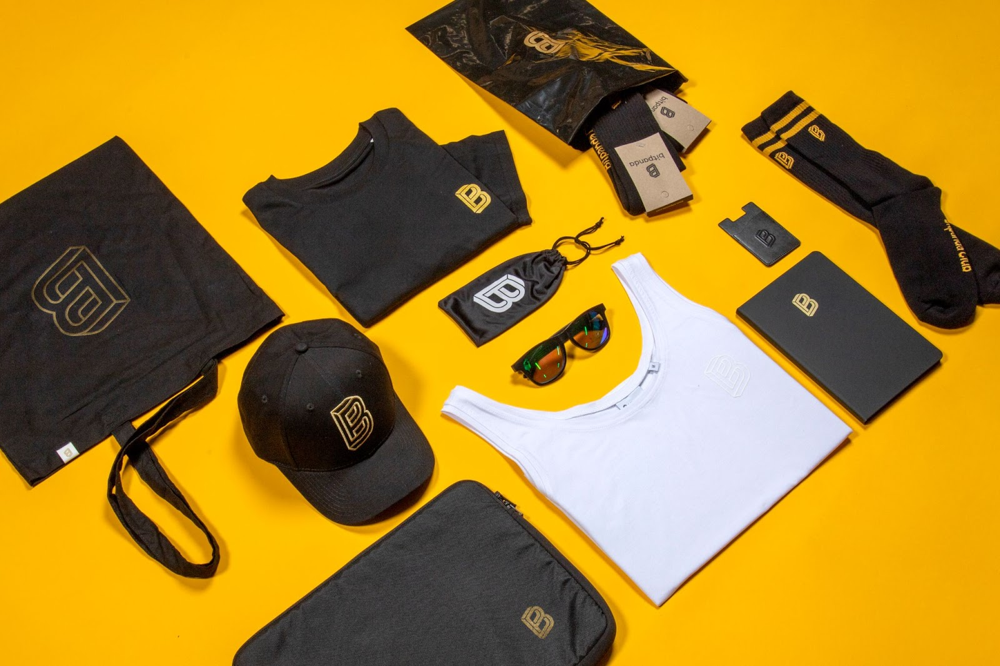
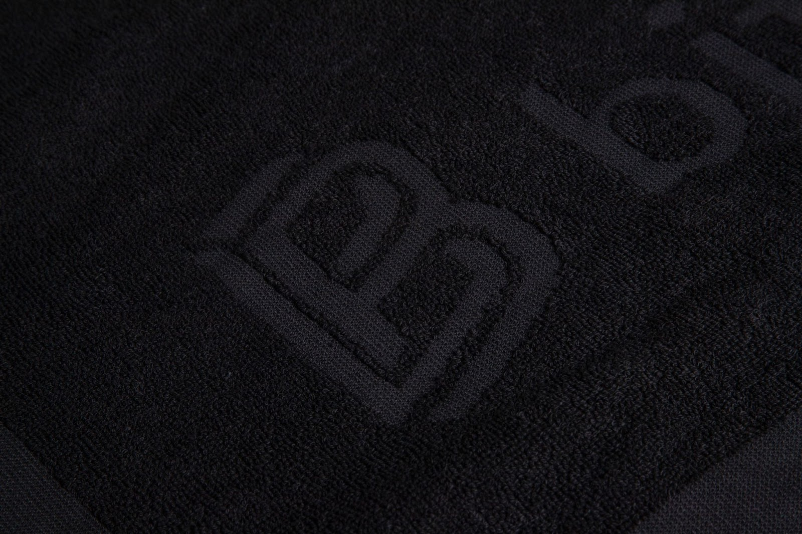
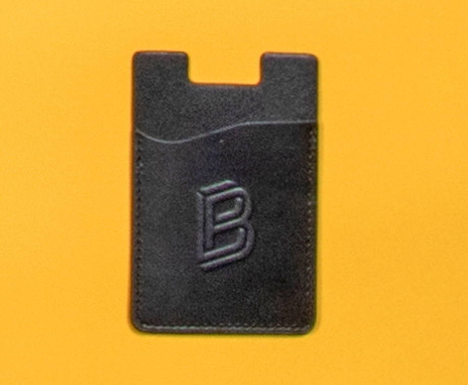

In the rapidly evolving digital economy, brands must leverage every tool at their disposal to stay ahead of the competition. Bitpanda, in partnership with Sunday, has demonstrated how a strategic approach to merchandise can significantly enhance brand visibility, employee engagement, and customer loyalty. This case study delves into the depth of this collaboration, highlighting the challenges, solutions, and long-term impact of Bitpanda's centralized merchandise strategy.
To ensure the effectiveness of their merchandise strategy, Bitpanda established specific KPIs tailored to each campaign. For instance, merchandise aimed at VIP customers is evaluated based on customer retention metrics, while employee-focused initiatives measure success through employee retention rates and Net Promoter Scores (NPS). This precise approach allows Bitpanda to track the direct influence of merchandise on their core business objectives, ensuring that each campaign delivers tangible results. In this article we talk more about measuring the impact of your merchandise campaigns.

Bitpanda celebrates tenure with milestone rewards:
Recognizing and rewarding employee loyalty is essential for fostering a strong company culture. The Bitpanda tenure program is designed to honor their team members' dedication by offering them exclusive merchandise packages that allow them to proudly showcase the brand. We've launched four distinct packages tailored to key milestones—3 years, 5 years, 7 years, and 10 years—each featuring a curated selection of products that increase in exclusivity with each stage. These carefully crafted packages not only express gratitude for the Bitpanda employees' commitment but also empower them to become true brand ambassadors, proudly wearing their achievements and the company's identity.
Adopting a centralized merchandise strategy was not without its challenges. Initially, merchandise management was fragmented across different departments, with no central oversight. To address this, Sunday conducted a functional assessment, engaging with all relevant VPs and stakeholders. This process helped to map out ongoing and future merchandise campaigns, enabling a more cohesive approach.
Screenshot of the Bitpande employee coin store
One critical factor in ensuring successful adoption was the partnership with Dawn, a key internal champion who played a pivotal role in driving the project forward. By serving as the primary liaison between Sunday and Bitpanda's internal teams, Dawn ensured that the strategy was embraced company-wide. Additionally, a general contract was established, making Sunday the official merchandise supplier for all Bitpanda teams, further consolidating the centralized approach.
Bitpanda Bitcoin Halving Kit
To support this transition, Sunday provided extensive training and resources, including a "wardrobe training system" for Dawn and her colleagues. Each time a new department joined the platform, comprehensive training sessions were held to ensure smooth integration. Regular weekly meetings were also instituted to maintain momentum and keep all parties aligned on project goals.
Bitpanda's merchandise strategy goes beyond standard branded items. The collaboration with Sunday has led to the creation of a diverse range of unique products, all meticulously aligned with Bitpanda's brand identity. From custom-designed backpacks with specific measurements and inner linings to subtly branded VIP collections, every item is crafted with care and precision.
Unique “hand-holding” Bitpanda socks to celebrate the Bitcoin halving
One standout initiative was the development of a sneaker campaign, featuring custom-designed shoes that quickly became a collector's item among Bitpanda employees and customers. Other innovative products included kids' toys for fairs and events, and fully customized, limited-edition fashion collections for VIP customers, designed to evoke the allure of exclusive fashion brands.
Bitpanda understands the importance of celebrating the personal milestones of its team members, which is why they've introduced a heartwarming Parent Gifting Program. To honor the arrival of a new family member, Bitpanda sends out a thoughtfully designed baby box to employees who become parents. This adorable package, crafted with care, includes charming baby essentials that reflect Bitpanda's commitment to supporting its team both professionally and personally. It's a gesture that not only celebrates new beginnings but also strengthens the bond between Bitpanda and its valued team members during one of life's most joyous moments.
Merchandise is not an isolated marketing tool at Bitpanda; it is seamlessly integrated into the company's broader marketing strategy. Thanks to the strategic involvement of VPs and the internal champion, every merchandise campaign is aligned with other ongoing initiatives. For example, Bitpanda's active sports sponsorships are complemented by targeted merchandise that activates these partnerships and enhances brand visibility.
Bitpanda merch map: calendar of projects
Additionally, merchandise plays a critical role in Bitpanda's lead generation efforts, particularly for VIP and exclusive customers. By creating a community system where customers can collect and exchange branded items, Bitpanda has turned merchandise into a powerful tool for building and sustaining customer loyalty.
Sustainability is a key consideration in Bitpanda's merchandise strategy. Sunday produces all merchandise within Europe, ensuring full control over the supply chain and adherence to high sustainability standards. Each shipment is carefully measured for its carbon footprint, and the associated CO2 emissions are offset through tree planting initiatives. Furthermore, Sunday's commitment to producing merchandise to order eliminates waste and ensures that only the necessary quantities are produced, reducing the environmental impact of the entire operation.
Bitpanda's approach to merchandise is not a one-off campaign; it is a continuously evolving strategy designed to build long-term brand equity. By gathering data on the long-term impact of their merchandise efforts, Bitpanda aims to elevate merchandise to a key marketing channel that can compete with more traditional methods like online advertising.
To keep the merchandise offering fresh and exciting, Sunday adopts a fashion industry-inspired approach, with limited-edition runs and seasonal collections that create a sense of urgency and exclusivity. This strategy not only enhances the appeal of the merchandise but also fosters a culture of brand loyalty and collectibility among employees and customers.
As the centralized merchandise strategy gained traction, managing the increasing number of projects across multiple departments became a challenge. To address this, Sunday and Bitpanda developed robust systems and technologies to keep all projects organized and on track. Regular meetings, detailed project overviews, and close collaboration between dedicated teams from both companies have been key to maintaining control over this growing operation.
One critical lesson was the importance of deeply understanding the brand's identity. Sunday invested in training its design team to ensure they could create merchandise that was not just on-brand, but also resonated deeply with Bitpanda's values and aesthetics.
Bitpanda is committed to nurturing its most valued clients by transforming them into brand ambassadors through an exclusive VIP program. This initiative is designed to enhance loyalty and build a vibrant community by offering top clients special rewards. VIP members are treated to exclusive invitations to private events and receive premium merchandise that reflects their significance to the company—delivered directly to their homes via the Wardrobe platform or presented personally at events. The ultimate goal is to elevate these clients into the prestigious GOLD club, representing the top 1% of Bitpanda's clientele. This program not only strengthens client loyalty but also cultivates a powerful network of brand advocates who proudly represent Bitpanda.
Every customer segment has a fitting design style
Bitpanda's strategic approach to merchandise sets it apart from many of its competitors, who often treat merchandise as a series of ad hoc projects rather than a cohesive strategy. By adopting a centralized, data-driven approach, Bitpanda is poised to reap the long-term benefits of a well-executed merchandise strategy, positioning itself as a leader in brand engagement and loyalty.
Bitpanda leather embossed cardholder
As other companies begin to recognize the value of a strategic merchandise approach, they will likely follow in Bitpanda's footsteps. However, Bitpanda's early adoption and continuous innovation give it a significant competitive edge that will be difficult to surpass.
The collaboration between Bitpanda and Sunday highlights the immense potential of a centralized merchandise strategy. By treating merchandise as a core component of their brand strategy, Bitpanda has not only enhanced its brand visibility and customer loyalty but also created a sustainable, scalable, and highly effective marketing channel. As Bitpanda continues to innovate and refine its approach, it stands as a testament to the power of strategic merchandise in building a brand that resonates with employees, customers, and the wider market.
Looking to start dressing your team?
Want to discuss a project? Interested in
visiting one of our offices? Let us know!